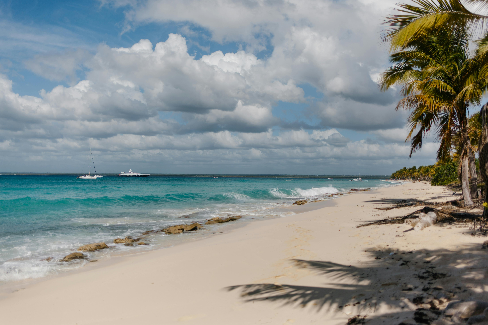
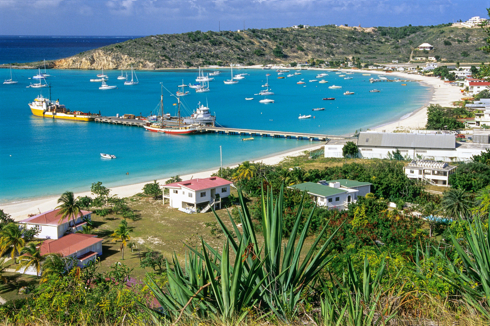

While living in Martinique and island-hopping around the Caribbean, we made our way over to Anguilla from St Martin — rented a car and just drove. No itinerary, no rush, no plan beyond seeing what we could find. What we found was one of the most relaxed and beautiful islands in the entire Caribbean — hidden beaches with turquoise water, tiny villages, reggae drifting from little bars, extraordinary sunsets and, unforgettably, chickens. Chickens absolutely everywhere.


We were living in Martinique at the time and island-hopping had become one of our favourite things to do. The Caribbean is extraordinary for it — so many islands, all within easy reach, all completely different from one another. Anguilla came via St Martin, a short ferry crossing across to Blowing Point, and then we were in a completely different world.
Anguilla is a British Overseas Territory — flat, small, and almost entirely free of the overdevelopment that has changed so many Caribbean islands. What it has instead is beaches. Extraordinary, uncrowded, white-sand beaches with some of the most vivid turquoise water you will see anywhere in the world. And the pace of life on the island matches the scenery — unhurried, warm, completely relaxed.
We rented a car at the ferry terminal and set off with no particular plan. We drove around the coast, stopped at beaches that caught our eye, wandered through tiny villages and found little bars playing reggae where we stopped for cold drinks and watched the world go by. Looking back on it now, it was one of those carefree holidays that stays with you for years. It was perfect precisely because nothing was planned.
They were utterly everywhere. Free-range does not begin to cover it — these chickens were fully feral, completely uninterested in humans and absolutely certain that the entire island belonged to them. You would be driving along a perfectly normal road and suddenly have to stop for a procession of chickens crossing at their own pace, going about their business with tremendous dignity.
And then we stopped for lunch at a little roadside canteen-style café. It was exactly the kind of place you hope to find on a Caribbean island — a few plastic chairs, a handwritten menu, someone's grandmother presumably doing the cooking out the back. We ordered the chicken.
And then we waited. And waited. The service was, by any objective measure, extraordinarily slow. We sat there for a very long time, watching the chickens wander past the window outside, and gradually the same thought occurred to both of us at the same moment — they have gone out the back to catch one. We are still not entirely sure they hadn't. The chicken, when it eventually arrived, was absolutely delicious. We chose not to ask too many questions.
It is one of those small, silly travel memories that somehow becomes the story you tell most often. Years later, it is still the first thing either of us mentions when Anguilla comes up in conversation.
Anguilla's beaches are the reason people come and the reason they come back. The island has over thirty beaches — long, wide, white-sand stretches with water in shades of turquoise and blue that seem almost artificial in their vividness. The sand is powder-fine and brilliant white. And because Anguilla has always kept development low and tourism relatively exclusive, most of the beaches are uncrowded even in peak season.
Shoal Bay East is consistently rated among the best beaches in the world — a kilometre of perfect white sand, calm shallow water and a handful of beach bars and restaurants that manage to be exactly right without being over-developed. It is the kind of beach that makes you understand why people fall in love with the Caribbean and never quite leave.
Meads Bay on the northwest coast is equally beautiful — broader, more open, with a slightly more energetic surf and some of the island's finest restaurants behind the dunes. Rendezvous Bay stretches for nearly three kilometres with views across to St Martin on the horizon. Every beach on the island has something different to offer, which is why having a car and driving from one to the next is so endlessly rewarding.
Beyond the beaches, Anguilla rewards the curious driver. The island's tiny villages — The Valley (the capital, which is a very relative term), Sandy Ground, Island Harbour — are quiet, unhurried and genuinely charming. Sandy Ground has the most concentrated nightlife on the island — a strip of bars and restaurants along a narrow spit of land between a salt pond and the sea, where live music plays most evenings and the rum punch is cold and strong.
We stopped at little bars along the way where reggae was playing and ordered drinks and sat and watched the world go by at its own pace. There is no rushing in Anguilla. The island does not encourage it and the atmosphere does not permit it. You slow down, whether you intend to or not, and after a while you stop trying to resist it.
The sunsets in Anguilla are extraordinary. The island sits low in the water and the sky is enormous — when the sun goes down over the Caribbean Sea the colours are breathtaking. We watched several and each one was better than the last. It is the kind of thing that reminds you why you travel.
Renting a car and driving at our own pace with no plan — stopping wherever caught our eye, discovering beaches no tour bus would ever visit. The absolute best way to experience Anguilla.
Wandering freely on every road, in every garden, across every car park. The most confident free-range chickens we have ever encountered anywhere. And the roadside café lunch that probably involved catching one fresh. A story we still tell.
Consistently rated among the best beaches in the world — and it earns it completely. Powder-white sand, vivid turquoise water and the easy Caribbean pace. One of the finest beaches we have ever been on.
The sky over Anguilla at sunset is enormous and extraordinary. The colours as the sun drops into the Caribbean Sea are breathtaking — the kind of view that reminds you exactly why you travel.
Stopping at roadside bars where reggae was playing, cold drink in hand, watching the island life go by. No rush, no agenda — just completely in the moment. Pure Caribbean magic.
Twenty minutes across the water and you are in a completely different world. The ferry crossing from Marigot to Blowing Point is one of those brilliant Caribbean island-hop moments that makes travel feel like a real adventure.
Anguilla is small enough to explore independently but a guided tour is a brilliant way to discover the island's best beaches, snorkelling spots and hidden corners — especially if you only have a day or two. TourRadar has great Caribbean island options that include Anguilla.
Disclosure: This is an affiliate link. If you book through it we may earn a small commission at no extra cost to you.
This 4-hour private snorkelling and sightseeing boat trip from Little Bay is one of the best ways to see Anguilla's coastline and reefs — the water clarity around the island is extraordinary and the marine life is brilliant. A brilliant way to see the island from a completely different angle.
Disclosure: If you book through this link we may earn a small commission at no extra cost to you.
The Four Seasons Resort and Residences Anguilla is one of the finest luxury resorts in the entire Caribbean — set on Barnes Bay with extraordinary beach access, world-class dining and the kind of effortless luxury that Anguilla does better than almost anywhere. Book through Klook for great rates.
Disclosure: This is an affiliate link. If you book through it we may earn a small commission at no extra cost to you.
Common questions
What to pack for Anguilla
Beaches, sunshine, snorkelling and self-drive exploring — Anguilla is a light-packing destination. These are the things we'd bring without hesitation.
Stay connected for maps and navigation as you explore the island — especially useful when you're discovering hidden beaches off the beaten track.
View on Amazon →The Caribbean sun reflects off white sand and turquoise water — high SPF is absolutely non-negotiable for a full day on Anguilla's beaches.
View on Amazon →The water clarity around Anguilla is extraordinary — bring your own snorkel gear and explore the reefs at any beach you stop at.
View on Amazon →A full day driving and beach-hopping drains your phone fast. Keep it charged for maps, photos and unexpected stops.
View on Amazon →Anguilla uses UK-style three-pin plugs — a universal adaptor covers all your devices.
View on Amazon →Essential for tropical evenings, especially near the mangroves and inland areas as you explore the island.
View on Amazon →Disclosure: These are Amazon affiliate links. If you buy through them we may earn a small commission at no extra cost to you.
Anguilla was one stop in a longer Caribbean adventure. Read our other island guides below.
A year living on the Island of Flowers — sun, sea, tropical storms and the friendliest people you'll ever meet.
Read the Martinique guide →The Jazz Festival, Steven Seagal on stage, the Gros Islet street party and the extraordinary Pitons rising from the sea.
Read the St Lucia guide →10 nights in Cancún — turquoise Caribbean water, Chichén Itzá, Isla Mujeres and Coco Bongo.
Read the Mexico guide →Rent a car, point it in a direction and just drive. Stop at every beach that catches your eye. Order the chicken. Watch the sunset. Anguilla is one of the most carefree and beautiful islands in the entire Caribbean.
Affiliate disclosure: if you book through our links we may earn a small commission at no cost to you. We only recommend experiences we've done ourselves.